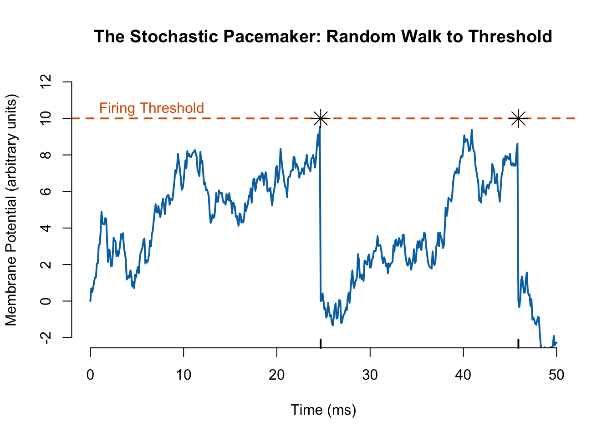

A ‘Zero-to-Hero’ Guide to Modeling Autonomic Dynamics
Author
Matías Castillo-Aguilar
1 The Physiological Foundation
1.1 Introduction: Beyond the “Black Box” of HRV
Grab a coffee, settle in, and let’s talk about the human heart. But not the romanticized version you see on Valentine’s cards, nor the simple mechanical pump your high school biology teacher described. We are going to talk about the heart as a stochastic machine—a noisy, jittery, beautiful mess of probability and biology.
If you have ever played a rhythm game like Guitar Hero or Rock Band, you know that hitting the note perfectly on the beat is hard. You might be a little early, a little late. Now imagine the drummer isn’t a machine, but a human being who just drank three espressos and is worried about their tax return. That drummer is your heart.
For decades, we have treated Heart Rate Variability (HRV) like a “black box”. You put an ECG in one side, and out pops a number like SDNN or RMSSD. We treat these numbers like magical runes that tell us if we are stressed or healthy. But that is a bit like judging a movie solely by its runtime. We are missing the plot! The heart rate is a vital sign, sure, but HRV is the actual quantitative measure of cardiovascular regulation by the autonomic nervous system.
The standard methods—counting beats, averaging intervals, or doing Fourier transforms—often treat the heartbeat series as a continuous signal, like a temperature reading or a stock price. But here is the kicker: heartbeats aren’t continuous signals. They are point processes. They are discrete events occurring in continuous time. A standard time-series model assumes that at every millisecond, there is a value. But there isn’t a “heartbeat value” between beats; there is just silence, followed by a sudden electrical explosion.
So, instead of just analyzing the output (the beats), what if we built a mathematical model of the drummer itself? What if we simulated the nervous system pulling the strings? That is what we are doing today. We are going to build a “virtual heart” from scratch, using rigorous math to describe the biology.
1.2 The Biophysics of a Beat: Why “Inverse Gaussian”?
To build our model, we first need to understand the hardware. The heart’s pacemaker is the Sinoatrial (SA) node, a small cluster of cells in the right atrium.
Think of the SA node cell like a bucket sitting under a dripping faucet. The water represents positive ions (sodium and calcium) flowing into the cell. The bucket has a “fill line” marked at the top. When the water hits that line, the bucket tips over, dumps the water, and triggers a heartbeat (an action potential). Then, the bucket sets itself back up and starts filling again immediately.
This mechanism is often called “Integrate-and-Fire”. The cell integrates (accumulates) voltage until it fires.
Now, here is where the chaos enters. The faucet isn’t dripping steadily. It is sputtering. Some milliseconds it drips fast, some milliseconds it drips slow. This is due to the stochastic nature of ion channels opening and closing—thermal noise, essentially. So, the water level in our bucket doesn’t rise in a perfect straight line. It wiggles upward. In mathematics, we call this a Gaussian Random Walk with Drift.
If the voltage rise is a random walk, then the time it takes to hit the threshold is a random variable. Specifically, the probability distribution of these “First Passage Times” (the time to hit the line) is known as the Inverse Gaussian distribution.
This is why we choose the Inverse Gaussian for our model. We aren’t just picking a bell curve because it looks nice. We are picking the distribution that physically describes how membrane potentials rise to a threshold. It is the mathematically correct description of the “leaky bucket” mechanics of your heart cells.
Let’s visualize this. In the code below, we simulate the “bucket” (membrane potential) filling up with noisy water. Watch how the randomness in the filling process leads to variation in the time it takes to spill (the heartbeat).
Code
set.seed(42)# Parameters for the Random Walkthreshold <-10drift <-0.5# Speed of fillingnoise_sd <-1.5# How "sputtering" the faucet isdt <-0.1# Time stepmax_time <-50# Simulation containerstime <-seq(0, max_time, by=dt)voltage <-numeric(length(time))voltage[1] <-0spikes <-numeric(0)# Simulate the "Bucket" fillingfor(i in2:length(time)) {# Random Walk step: Previous + Drift + Noise step <- drift * dt +rnorm(1, 0, noise_sd *sqrt(dt)) voltage[i] <- voltage[i-1] + step# Check Thresholdif(voltage[i] >= threshold) { voltage[i] <-0# Reset (Repolarization) spikes <-c(spikes, time[i]) # Record the beat }}# Plotting the physiological processplot(time, voltage, type='l', col="#0072B2", lwd=2,main="The Stochastic Pacemaker: Random Walk to Threshold",xlab="Time (ms)", ylab="Membrane Potential (arbitrary units)",ylim=c(-2, 12), frame.plot=FALSE)# Draw the Thresholdabline(h=threshold, col="#D55E00", lty=2, lwd=2)text(0, 10.5, "Firing Threshold", pos=4, col="#D55E00")# Draw the Spikes (Heartbeats)if(length(spikes) >0) {points(spikes, rep(threshold, length(spikes)), pch=8, col="black", cex=2)rug(spikes, col="black", lwd=2)}

Figure 1: The Integrate-and-Fire Mechanism. The blue line represents the membrane potential of a pacemaker cell. It drifts upward with noise (Brownian motion) until it hits the threshold (red dashed line). The moment it hits, a heartbeat occurs, and the potential resets. The time taken to hit the threshold is the R-R interval.
Notice in the plot above that the time between the black stars (the heartbeats) isn’t perfectly constant. Even though the drift (the average fill rate) is constant, the noise makes some beats happen early and some late. That variation? That is the most basic form of Heart Rate Variability.
This leads us to a critical realization provided by Barbieri et al.: if we assume the intervals are independent, we get a “Renewal Inverse Gaussian” model. But in reality, the speed of the dripping faucet changes over time because your nervous system is turning the handle! The sympathetic system opens the faucet (faster drip), and the parasympathetic system tightens it (slower drip). This means the intervals are not independent; they depend on the history of these inputs. We need a model that accounts for this dynamic history.
2 Phase 2: The Mathematical Engine
2.1 Point Processes for Non-Mathematicians
Now that we understand the hardware, let’s talk about the software. How do we mathematically describe the probability of a beat occurring right now?
In the world of continuous signals, you ask, “What is the value of X at time t?” In the world of events (point processes), you ask, “What is the probability that an event happens in the next split second, given everything that has happened so far?”
This instantaneous probability rate is called the Conditional Intensity Function, denoted as \(\lambda(t \mid \mathcal{H}_t)\). Think of it like a “Danger Meter” or a “Hazard Rate”.
Imagine you are waiting for a bus.
Minute 0-5: The probability of the bus arriving is low. \(\lambda(t)\) is near zero.
Minute 10: The scheduled arrival time is approaching. \(\lambda(t)\) starts to rise.
Minute 15: The bus is late. The probability that it arrives in the next second is getting very high because it has to arrive eventually. \(\lambda(t)\) peaks.
Minute 16 (Bus Arrives): The event happens!
Minute 16 + 1 second: The probability of another bus arriving immediately drops to zero. You just saw one; the next one won’t be here for a while. This is the Refractory Period.
Standard Poisson processes (like a Geiger counter measuring radiation) have a flat intensity. They have no memory. The bus could arrive at any second with equal probability. But the heart has a memory. It cannot fire immediately after a beat because the ion channels need to reset (repolarize).
The Inverse Gaussian model captures this beautifully. Its hazard rate starts at zero (refractory), rises steeply as the “bucket” fills, and then tapers off. This shape perfectly mimics the physiological recovery of the heart tissue.
Let’s visualize this “Hazard Rate” profile. This curve represents the urgency of the heart to beat as time ticks by since the last beat.
Code
# Time since last spike (tau)tau <-seq(0.01, 1.5, length.out=500)mu <-0.8# Mean interval (seconds)lambda_scale <-20# Shape parameter (inverse variance)# Inverse Gaussian PDFf_ig <-sqrt(lambda_scale / (2* pi * tau^3)) *exp(-lambda_scale * (tau - mu)^2/ (2* mu^2* tau))# Inverse Gaussian CDFz1 <-sqrt(lambda_scale/tau) * (tau/mu -1)z2 <--sqrt(lambda_scale/tau) * (tau/mu +1)F_ig <-pnorm(z1) +exp(2*lambda_scale/mu) *pnorm(z2)# Hazard Function: lambda(t) = f(t) / (1 - F(t))# We add a tiny epsilon to denominator to avoid division by zerohazard <- f_ig / (1- F_ig +1e-10)par(mfrow=c(1,1))plot(tau, hazard, type='l', lwd=3, col="#D55E00",main="The Heart's 'Urgency' Function",xlab="Time since last beat (seconds)",ylab="Conditional Intensity (Spikes/sec)", frame.plot=FALSE)grid()abline(v=mu, lty=2, col="grey")text(mu, max(hazard)*0.8, "Mean Interval", pos=4, col="grey")
Figure 2: The ‘Urgency’ to Beat. This plot shows the Conditional Intensity (Hazard Rate) for an Inverse Gaussian process. Notice how it starts at 0 (the heart refuses to beat immediately after the last one) and rises sharply as time approaches the mean interval (0.8s). This ‘Refractory’ shape is what separates biological models from simple Poisson models.
2.2 The SDE Revolution: Modeling the “Hidden Drivers”
We have our bucket (the SA node) and we have our probability curve (Inverse Gaussian). But who is turning the faucet handle? Who is changing the drift rate?
It is the Autonomic Nervous System (ANS). The ANS has two main branches that act like the accelerator and brake of a car:
Sympathetic: The accelerator. It releases norepinephrine, which opens the ion channels wider, fills the bucket faster, and raises the heart rate.
Parasympathetic (Vagal): The brake. It releases acetylcholine, which closes the channels, fills the bucket slower, and lowers the heart rate.
In the Barbieri model, these inputs are estimated beat-by-beat using a regression on the past history. It works well, but it treats the inputs as discrete steps. But your nerves don’t just switch states every heartbeat; they are continuous biological flows.
This is where we upgrade to Stochastic Differential Equations (SDEs). We model the sympathetic tone, let’s call it \(s(t)\), and the parasympathetic tone, \(p(t)\), as continuous variables that evolve in the background, invisible to the naked eye but driving the whole show.
We use the Ornstein-Uhlenbeck (OU) process to model these tones. Think of the OU process as a “Leaky Tank”.
The Input (\(u(t)\)): You pour water (neurotransmitters) into the tank based on external stress (exercise, math tests, scary movies).
The Leak (\(-a \cdot x(t)\)): The tank has a hole in the bottom. If you stop pouring, the water level naturally decays back to zero. This decay rate \(a\) is crucial.
The Noise (\(\sigma \cdot dW\)): The wind is blowing over the tank, causing ripples on the surface. Biology is never perfectly smooth; there is always synaptic noise.
Here is the beauty of it: biology dictates the leak size. The Parasympathetic system is fast. Acetylcholine is broken down instantly by enzymes. The tank leaks very quickly. This allows your heart rate to change in milliseconds (like when you exhale). So, \(a_p\) is large (fast decay). The Sympathetic system is slow. Norepinephrine works via second messengers (G-proteins). It’s like a heavy, sluggish fluid. The tank leaks slowly. So, \(a_s\) is small (slow decay).
2.3 Coupling the Systems: Sympathovagal Balance
These two systems don’t work in isolation. They talk to each other. Physiologists call this Sympathovagal Balance, but it is often more like a wrestling match.
There is a phenomenon called “Accentuated Antagonism”. When your sympathetic drive is super high (like running for your life), the parasympathetic system finds it harder to act. The “accelerator” effectively jams the “brake”.
We model this mathematically by coupling our SDEs. The equation for the change in parasympathetic tone, \(dp(t)\), might look like this:
The crosstalk term means the value of the other state influences how this state changes. This gives us a rich, interconnected system where the “hidden drivers” are dancing together, pushing and pulling the drift rate of our Inverse Gaussian bucket.
Let’s visualize this dance. In the code below, we simulate these two hidden processes. Notice how the blue line (Parasympathetic) is jagged and fast, while the red line (Sympathetic) is smooth and rolling. This difference in “texture” is exactly what allows us to distinguish them mathematically just by looking at the heartbeats!
Figure 3: The Hidden Drivers. This simulation shows the latent autonomic states. The blue Parasympathetic trace oscillates rapidly because of its fast decay rate (high a_p). The red Sympathetic trace is sluggish and smooth (low a_s). In our model, these two invisible lines combine to determine the drift rate of the pacemaker cell.
This framework moves us from a purely statistical description (distributions and regressions) to a mechanistic one. We aren’t just fitting a curve to data; we are simulating the biological machinery that generated the data. The “rubber band” of the SDE (mean reversion) represents enzymatic breakdown. The “noise” represents synaptic jitter. The “coupling” represents neural cross-talk.
In the next phases, we will see how to put this all together to generate realistic heartbeat data and, crucially, how to work backward to infer these hidden states from a patient’s ECG.